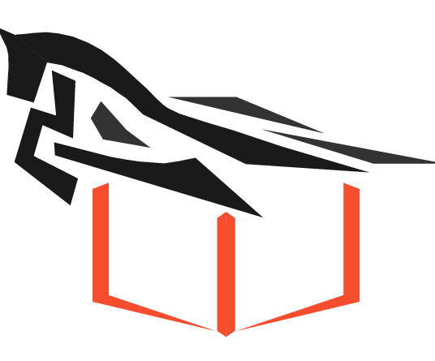

|
|
Hui Wang | 王辉
Hui Wang is an algorithm engineer in Community Science Department of Kuaishou Technology.
Before this, he received his master degree in June 2022, at School of Information, Renmin University of China, under the supervision of Wayne Xin Zhao.
He received his B.E. degree in Computer Science and Technology from School of Information, Renmin University of China in June 2019.
He has a broad interest in Recommender System, with an emphasis on Sequential Recommendation.
You can contact him by email at hui.wang AT ruc.edu.cn.
|
|
Publications [Google
Scholar]
|
-
Feature-aware Diversified Re-ranking with Disentangled Representations for Relevant Recommendation.
Zihan Lin*, Hui Wang*(equal contribution), Jingshu Mao, Wayne Xin Zhao, Cheng Wang, Peng
Jiang and Ji-rong Wen.
SIGKDD 2022.
|
-
Curriculum Pre-Training Heterogeneous Subgraph Transformer for Top-N Recommendation.
Hui Wang*, Kun Zhou*(equal contribution), Wayne Xin Zhao, Jingyuan Wang, and Ji-rong Wen.
TOIS 2022.
|
-
RecBole: Towards a Unified, Comprehensive and Efficient Framework for Recommendation
Algorithms.
Wayne Xin Zhao, Shanlei Mu*, Yupeng Hou*, Zihan Lin, Yushuo Chen, Xingyu Pan,
Kaiyuan Li,
Yujie Lu, Hui Wang, Changxin Tian, Yingqian Min, Zhichao Feng, Xinyan Fan, Xu
Chen, Pengfei Wang,
Wendi Ji, Yaliang Li, Xiaoling Wang and Ji-Rong Wen
CIKM 2021, Resource Track.
|
-
S3-Rec: Self-Supervised Learning for Sequential Recommendation with Mutual Information Maximization.
Kun Zhou*, Hui Wang*(equal contribution), Wayne Xin Zhao, Yutao Zhu, Sirui Wang, Fuzheng
Zhang, Zhongyuan Wang and Ji-rong Wen.
CIKM 2020.
|
-
Leveraging Historical Interaction Data for Improving Conversational Recommender System.
Kun Zhou, Wayne Xin Zhao, Hui Wang, Sirui Wang, Fuzheng Zhang, Zhongyuan
Wang and Ji-rong Wen.
CIKM 2020, Short Paper.
|
-
Sequential Recommendation with Self-Attentive Multi-Adversarial
Network.
Ruiyang Ren, Zhaoyang Liu, Yaliang Li, Wayne Xin Zhao, Hui Wang, Bolin
Ding and Ji-rong Wen.
SIGIR 2020.
|
|

|


RecBole is a unified, comprehensive and efficient framework for reproducing and
developing
recommendation algorithms.
[HomePage]
[GitHub]
[Paper]
|
|
Experience
|
-
Algorithm Engineer, Community Science Department, Kuaishou Technology.
07/2022 - Now, Content Recommendation Center.
-
Research Intern, Community Science Department, Kuaishou Technology.
03/2021 - 02/2022, Content Recommendation Center.
|
|
Education
|
-
M.E., Renmin University of China.
2019 - 2022, School of Information
Advisor: Prof. Wayne Xin Zhao.
-
B.E., Renmin University of China.
2015 - 2019, School of Information.
|
|
Honors and Awards
|
-
Outstanding Graduate, Renmin University of China, 2022.
-
Outstanding Graduate, Beijing, 2019.
|
|